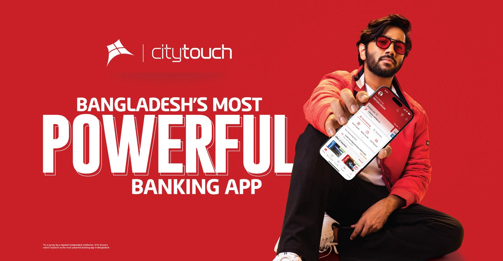
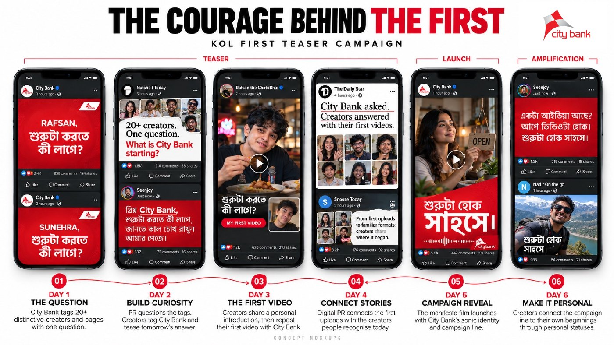
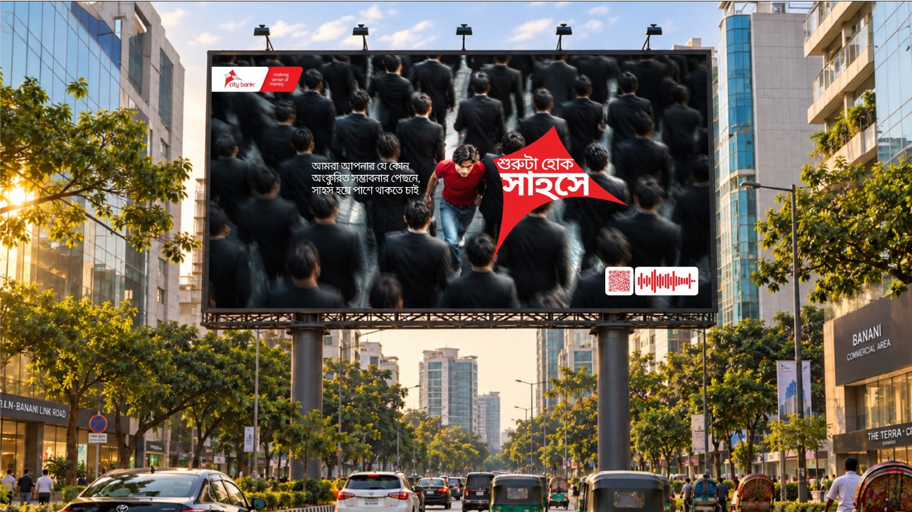
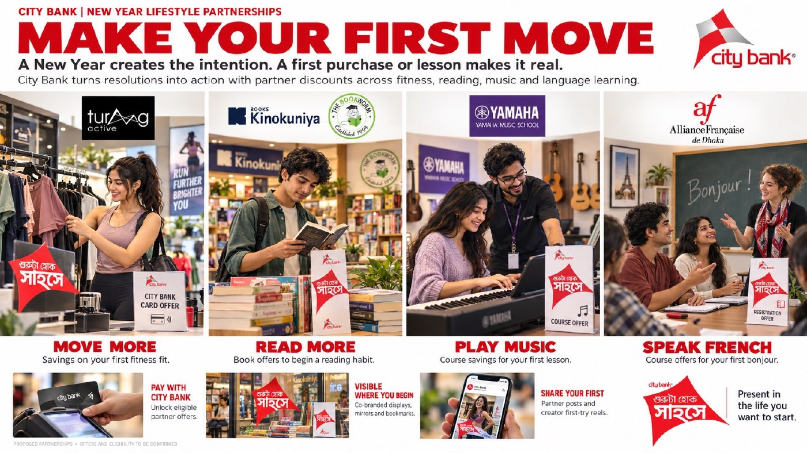
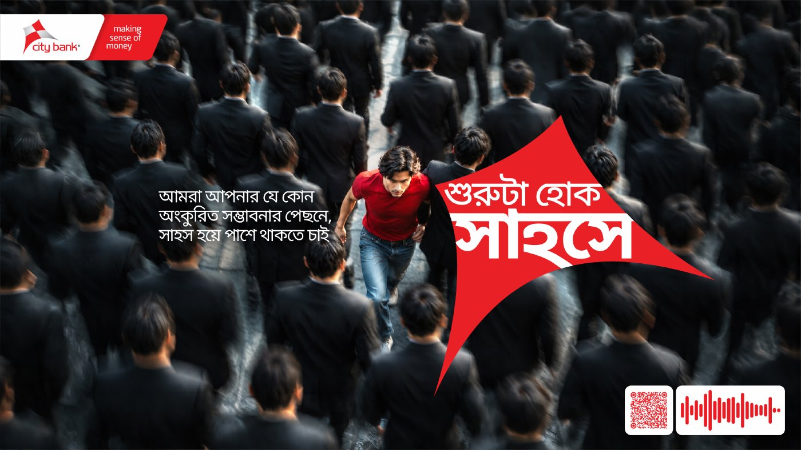
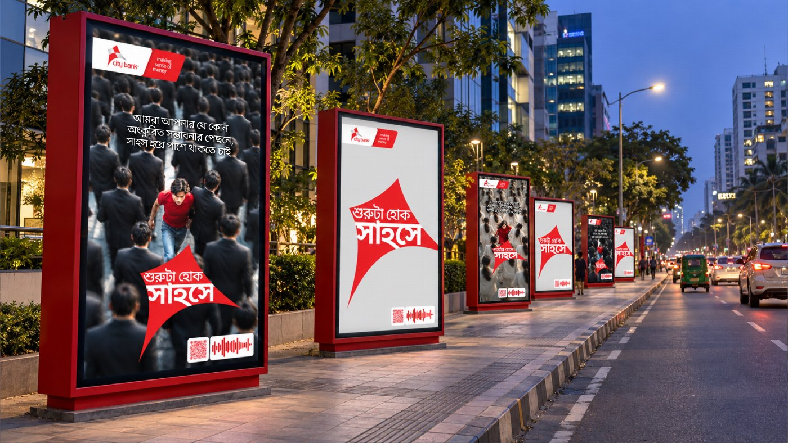
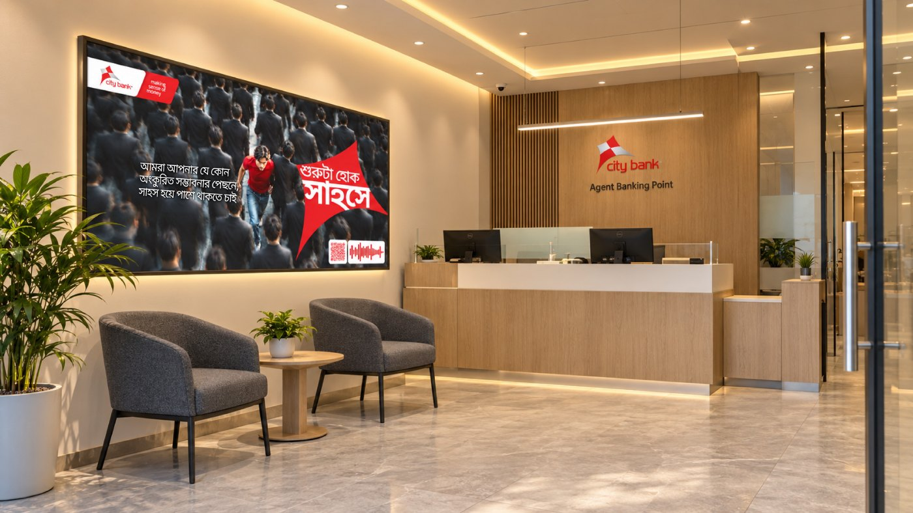
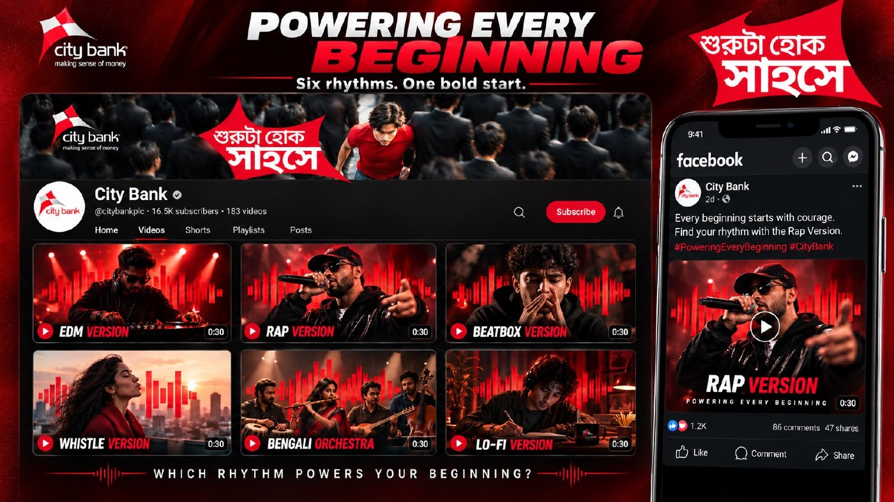
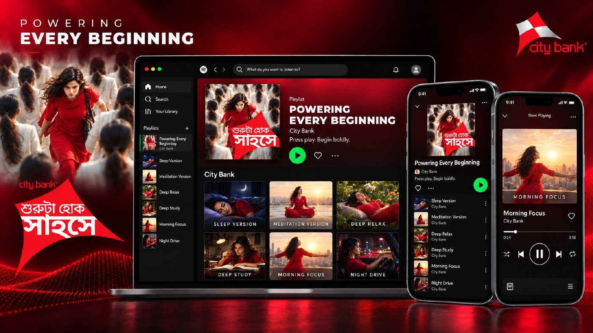
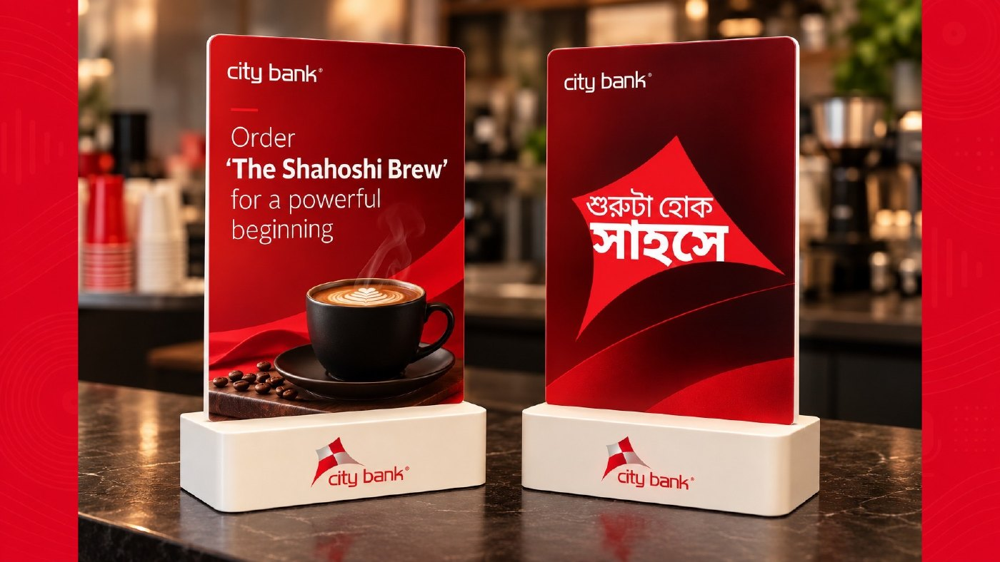

OUR
TAGLINE
Defines the value we deliver.
PROMISETHE NEXT CHAPTER OF
THE NEXT CHAPTER
OF OUR BRAND
It defines our promise of simpler, clearer banking.
However, its flexibility is limited across Bangla, mass-market campaigns and broader emotional storytelling.
Defines the value we deliver.
PROMISEExpresses a larger belief that connects our communications, products and experiences.
BELIEFWe built our brand on trust.
Generations of customer relationships have made trust one of City Bank's strongest assets.
But trust is not just something we have earned.Our next phase of growth demands stronger connections with new generations, wider audiences and evolving aspirations.
Why people can choose us.
Why people want to choose us.
Trust makes us a credible choice.
Relevance makes us a compelling choice.Behind every financial decision is a personal ambition.
Presented during the 2025 Strategy Presentation
সাহসে, সম্ভাবনায়
City Bank's strength, capabilities and innovation.
Our customers' ambitions and aspirations.
We made POWER tangible through Citytouch.
Citytouch translated strength, capability and innovation into an experience customers could use every day.

The first expression of the POWER proposition.
From a strategic thought to a tangible customer experience.People have ambitions.
From possibility to beginning.
What could happen.
The moment progress starts.
A possibility can remain a thought forever.
A beginning changes that.Our role is not simply to inspire possibilities, but to empower people to pursue them.INTRODUCING CITY BANK'S NEW BRAND MOTTO
শুরুটা হোক সাহসে
One brand idea connecting City Bank to people across generations, aspirations and life stages.
An original sonic identity led by Fuad, developed with musicians from around the world.
Designed to become a distinctive, long-term asset that makes City Bank instantly recognisable.
27 DECEMBER - 6 JANUARY
The turn of the year creates a natural cultural moment for resolutions, fresh starts and first steps. Launching at the beginning of 2027 makes the idea immediately relevant—and gives City Bank the full year to build it.



THE LAUNCH MOMENT / 20 DAYS
The brand film connects the ambitions people postpone with the courage required to begin. A concentrated launch across high-reach and owned channels turns the strategic idea into a shared cultural story.



AMPLIFY / THROUGHOUT 2027
Use the sonic identity consistently across broadcast, digital, partnerships and owned touchpoints. Adaptable versions can keep the expression fresh while preserving one recognisable City Bank signature.



Trust gave us our foundation.
Power gives us our direction.
Beginnings give us our purpose.
Now, we want to become the bank that gives people the confidence to begin.